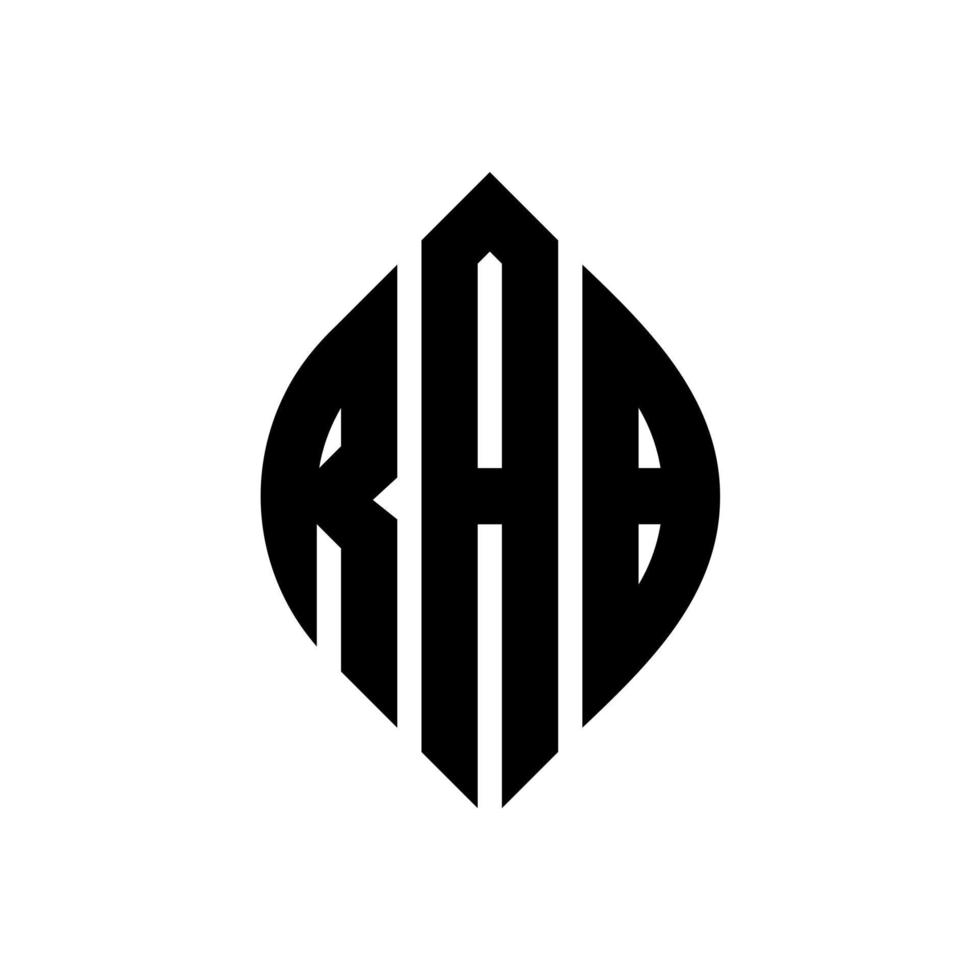

Theatrical Producer and Director
Rumah Aksarabumi · Full-time
Feb 2024 – Present · 8 mos
Jakarta, Indonesia
Artistic director and producer in independent
theatrical house dedicated to text-driven storytelling.
- Leading the production cycles of the house's major production. Managing ensemble casting, venue architecture, budgeting, and set design work flows.
- Consulting expert for minor productions.
- Script, block, and direct original theatrical plays that merge universal physical theater techniques with narrative driven scripts.